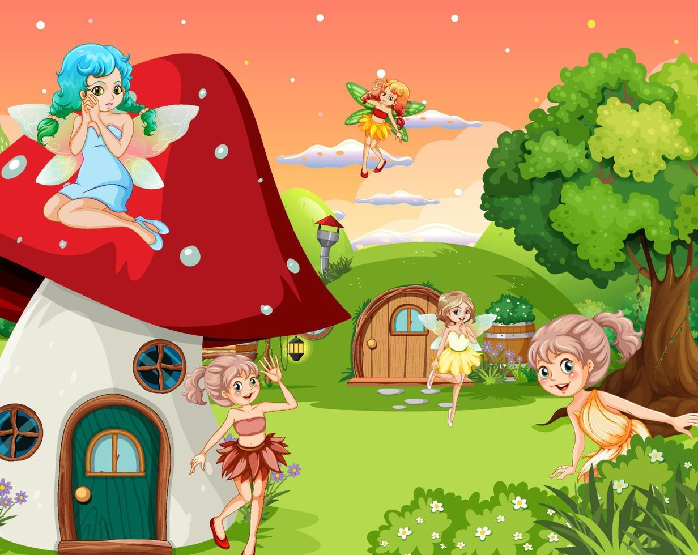
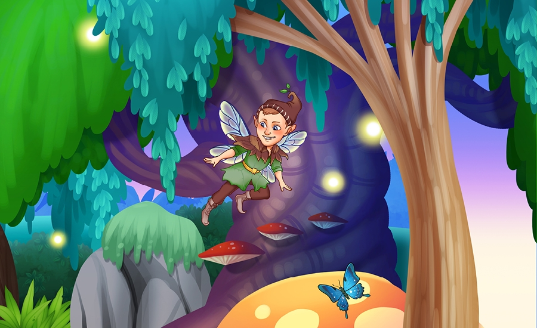

We are going to have a magical journey and you, fairies and elves are chosen to join!
At our kindergarten, we believe that teaching obedience is not merely about following instructions; it's about empowering our little learners to understand the importance of rules, respect, and cooperation. Join us on this educational adventure as we explore creative and engaging approaches to instill the values of obedience in our kindergarten students.
Fairies and Elves, today, we are going to learn what and why obedience is important. Not only that, but we will be able to be an advocate of cleanliness - we are going to make sure that we are able to help clean our environment.
Are you ready for this journey, Fairies and Elves?
Are you ready for this journey, Fairies and Elves?
